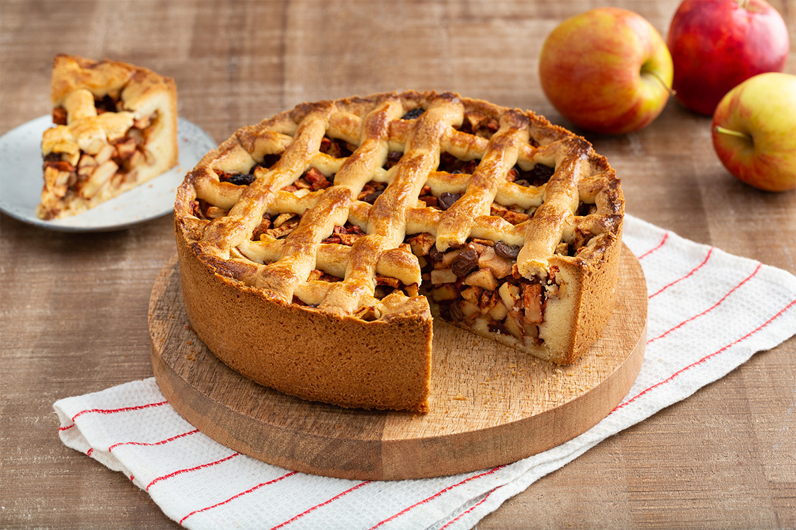

How to make an applepie

Apple pie is a classic dessert that has been enjoyed for generations.
It is a perfect blend of sweet and tart flavors, with a flaky crust that melts in your mouth.
The aroma of cinnamon and apples wafting through the air is enough to make anyone’s mouth water.
The beauty of apple pie is that it can be enjoyed in any season. Whether it’s a warm summer day or a chilly
winter evening, apple pie is always a welcome treat. It’s a dessert that can be dressed up or down, served
with a scoop of vanilla ice cream or a dollop of whipped cream. The versatility of apple pie is what makes
it so amazing. It’s a dessert that can be enjoyed by all ages, and it’s perfect for any occasion. So go ahead,
indulge in a slice of apple pie and savor the deliciousness!
- 2 cups of plain flour
- 1 teaspoon of salt
- ¾ of a stick (90 grams) of tenderflake pastry lard or butter
- 10 tablespoons of cold water
- 1 egg (for brushing, helps the surface get golden)
- Milk (for brushing the crust)
- ⅓ cup of white sugar
- 6-8 medium-sized apples
- 1 teaspoon cinnamon
- Prep the ingredients: In a large bowl, mix together 285 grams of flour and 1 teaspoon of baking powder, then chill in the fridge1.
- Cut the butter into cubes and mix it into the bowl: Use your fingers to toss the butter and smash each cube until it’s flat
- Stir in 3 tablespoons of cold water to make a shaggy dough: Pour the cold water into the bowl and use your hands to mix the dough until it comes away from the sides of the bowl.
- Roll the dough into a rectangle: Sprinkle a large work surface with flour and scoop the dough onto it. Use a rolling pin to roll the dough into a large, roughly shaped rectangle.
- Divide the dough into two equal-sized balls: Flatten into disks by using the palm of your hand and then wrap in plastic wrap. Place in the refrigerator and let chill for at least 30 minutes.
- Peel and Core Apples: While the dough is chilling in the fridge, wash, core and peel 8 apples.